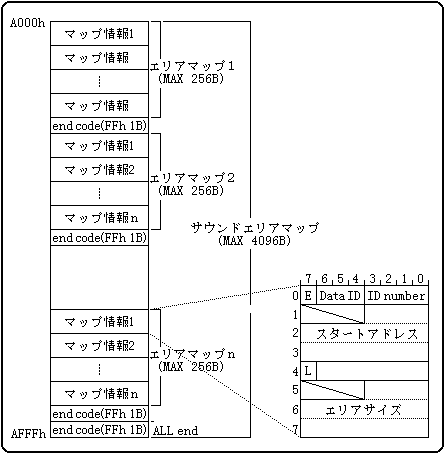
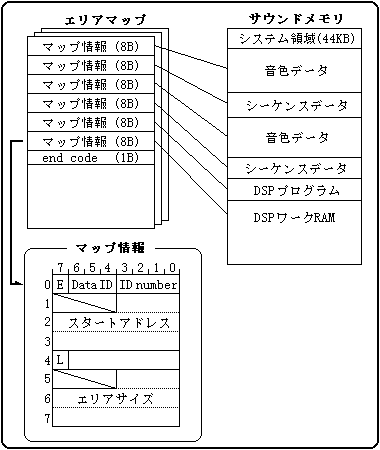

★SOUND Manual
★サウンドドライバプログラマーズガイド
★SOUND Manual
★サウンドドライバプログラマーズガイド
サウンドエリアマップの構成

エリアマップとサウンドデータの関連

エリアマップはいくつかのマップ情報をひとつに結合したもので、サイズは可変長です。マップ情報は最大で32まで持つことができ、エリアマップのサイズはマップ情報の数で決まります。サイズが可変長ですので、エリアマップの最後には1バイトのエンドコードが入ります。
マップ情報のビットイメージ
| E | データ終了ビット | マップ情報の終了ビットです。実際にはFFhの1バイトとなります。 |
| Data ID | データ種別 | ここで定義するエリアに格納するデータの種別です。 |
| ID number | データ種別内識別番号 | 同じ種別のデータが複数ある場合の識別番号です。 |
| スタートアドレス | スタートアドレス | ここで定義するエリアの先頭アドレスです。 |
| L | 転送済みビット | 本エリアにデータが転送されたことを示すフラグです。 |
| エリアサイズ | エリアサイズ | ここで定義するエリアのエリアサイズです。 |
| 発音方法 | サウンドメモリ上の音色データ（波形データ）を音源として、シーケンスデータを解凍しながら演奏させる方法です。 |
| 特徴 | 波形データを音源（一つの楽器）として、サターン自体をマルチ音源の楽器として扱う方法です。 |
| 長所 |
|
| 短所 |
|
PCMストリーム再生
| 発音方法 | 波形データをループ再生させ、この中の発音が終わった部分に次の波形データを転送するということを繰り返して、長い波形データを連続再生させる方法です。 |
| 特徴 | あらかじめ録音してある長い波形データをそのまま再生する方法です。 但し音がとぎれないように波形データを転送し続けなければなりません。 |
| 長所 |
|
| 短所 |
|
CD-DA再生
| 発音方法 | CDの音声トラックに録音してある音声を、ハード的に直接再生させる方法です。 市販の音楽CDをならすのと全く同じ方法です。 |
| 特徴 | あらかじめ録音してある長い波形データをそのまま再生する方法です。 音声はハードウェアによって自動的に出力されます。 |
| 長所 |
|
| 短所 |
|
| チャンネル (0-7) | 4チャンネル(0-3)、または8チャンネル(0-7)が指定できます。 |
| PAN位置 (0-30) | 値が0で左、15で中央、30で右の左右180度15段階までのPANを振ることができます。 |
| 距離 (0-127) | 値が0で距離は0で、値が大きくなるほど距離が離れます。 |
| 方位 (0-127) | 方位360度を128段階で指定します。値が0で右0度、32で右90度、64で右180度、96で右270度です。 |
| 高さ (0-127) | 高さを128段階で指定します。値が0で真上、32で目の高さ、64で真下、96で後方の目の高さです。 |
★SOUND Manual
★サウンドドライバプログラマーズガイド